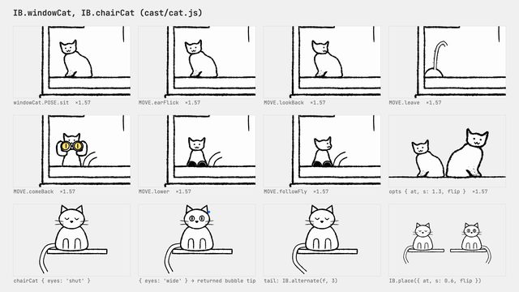
출연진 견본: 흰 채움에 먹 외곽선의 고양이 둘, 창가 고양이 IB.windowCat의 포즈와 동작 여섯, 의자 고양이 IB.chairCat의 눈과 꼬리, 그리고 IB.place로 옮겨 놓기.
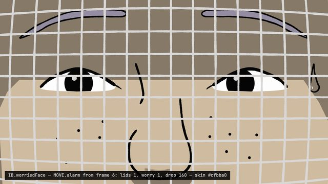
출연진 견본: 펜싱 마스크 너머로 화면을 가득 채운 두 얼굴 IB.boldFace(자신 있는 쪽)와 IB.worriedFace(불안한 쪽)가 철망 IB.maskMesh 아래에서 동작 하나씩을 한다(IB.boldFace.MOVE.scowl, IB.worriedFace.MOVE.alarm).
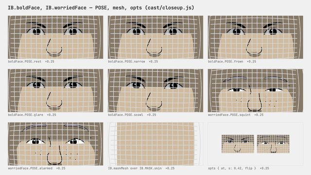
출연진 견본: 철망 얼굴의 이름 붙은 포즈 전부(IB.boldFace.POSE: rest, narrow, frown, glare, scowl, IB.worriedFace.POSE: squint, alarmed), 철망 IB.maskMesh만 따로, 그리고 다른 자리에 놓은 작은 인서트(opts.at·s·flip: 얼굴과 철망이 1920×1080 틀째 옮겨지고 그 틀 밖은 잘린다).
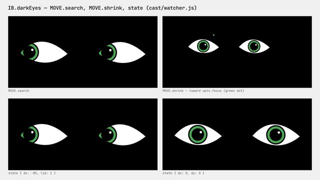
출연진 견본: 여섯 번째 스팟을 여는 어둠 속의 눈 한 쌍 IB.darkEyes와 그 동작 IB.darkEyes.MOVE.search, shrink.
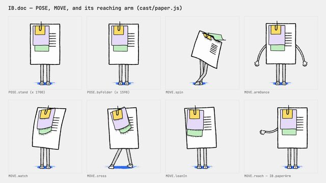
출연진 견본: 서류 IB.doc의 포즈 둘(IB.doc.POSE.stand, byFolder)과 동작 여섯(IB.doc.MOVE.spin, armDance, watch, cross, leanIn, reach).
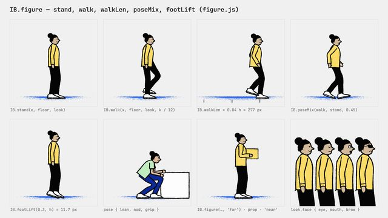
출연진 견본: 관절 인물 리그 IB.figure와 그 포즈를 만드는 IB.stand, IB.walk, IB.walkLen, IB.poseMix, IB.footLift.
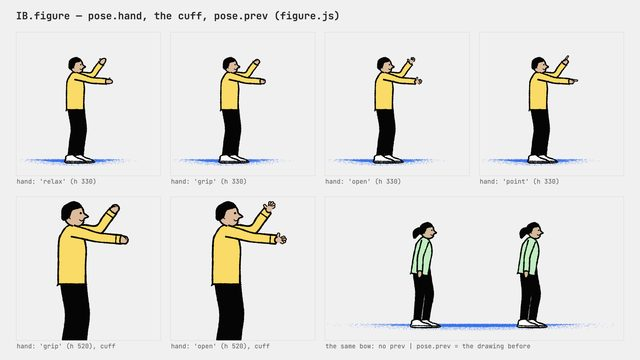
출연진 견본: 인물 리그 IB.figure의 손 네 가지(pose.hand: relax, grip, open, point), 긴소매의 소맷단 선, 앞 그림을 pose.prev로 넘겨 머리와 묶은 머리가 한 장 늦게 따라오는 움직임.
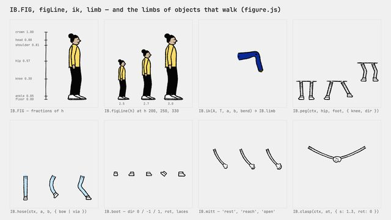
출연진 견본: 인물 리그의 비례 IB.FIG와 선 굵기 IB.figLine, 그 아래의 두 관절 풀이 IB.ik와 옷 모양 IB.limb, 그리고 걷는 물건(폴더, 서류, 상자)의 팔다리 IB.peg·IB.hose·IB.boot와 손 IB.mitt·IB.clasp.
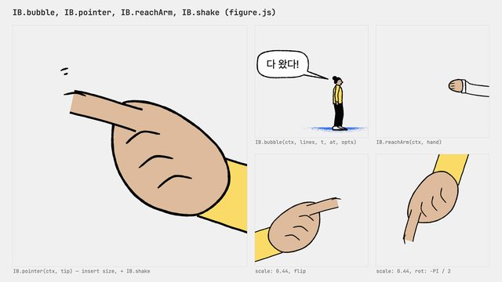
출연진 견본: 인물 곁에 붙는 말풍선 IB.bubble, 화면 밖에서 들어오는 손가락 IB.pointer와 팔 IB.reachArm, 떨림 표시 IB.shake.
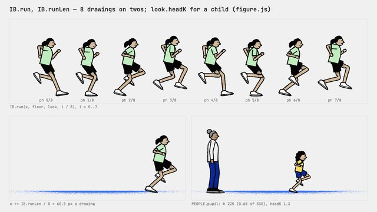
출연진 견본: 인물 리그의 뛰기 IB.run과 한 사이클 거리 IB.runLen, 그리고 아이 체형 look.headK.

출연진 견본: 파란 폴더 IB.folder의 이름 붙은 포즈 넷(IB.folder.POSE: 원본 무대에서 서는 자리)과 동작 셋(IB.folder.MOVE.kick, aboutFace, groove), 그리고 다른 자리에 놓기(opts.at·s·flip, IB.place).
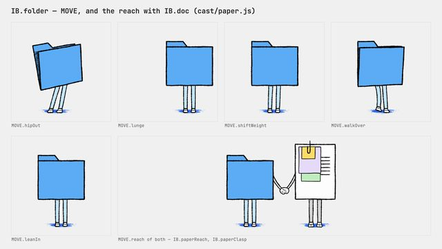
출연진 견본: 파란 폴더 IB.folder의 나머지 동작 다섯(IB.folder.MOVE.hipOut, lunge, shiftWeight, walkOver, leanIn)과, 폴더와 서류 IB.doc가 서로에게 뻗는 팔 IB.folder.MOVE.reach·IB.doc.MOVE.reach(IB.paperReach가 두 팔을 몸 뒤에서 그리고, 손이 닿으면 IB.paperClasp가 맞잡은 손을 몸 위에 그린다).
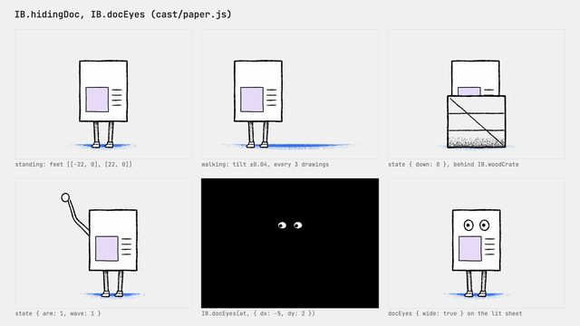
출연진 견본: 숨는 서류 IB.hidingDoc과 그 눈 IB.docEyes(flashlight-finds-file).
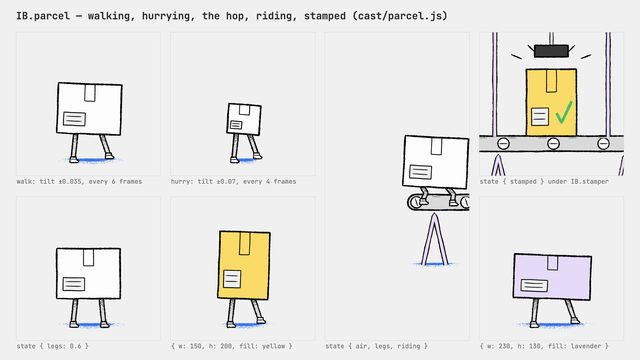
출연진 견본: 걷는 상자 IB.parcel.
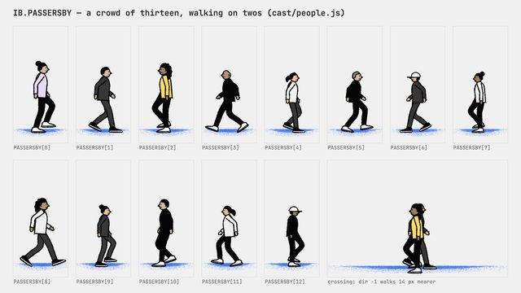
출연진 견본: 군중용 행인 열셋 IB.PASSERSBY.
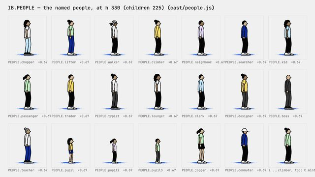
출연진 견본: 창작 장면의 이름 붙은 사람들 IB.PEOPLE 스무 명.
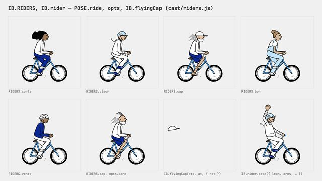
출연진 견본: 탠덤 스팟의 다섯 라이더 IB.RIDERS(curls, visor, cap, bun, vents)와 그들의 리그 IB.rider, 날아가는 모자 IB.flyingCap.
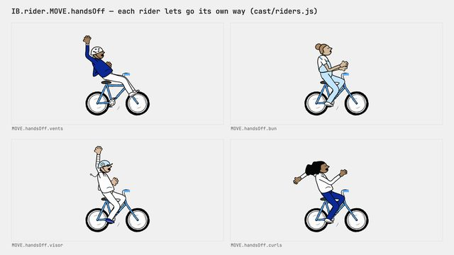
출연진 견본: 피날레에서 라이더마다 손잡이를 놓는 자기 방식 IB.rider.MOVE.handsOff(vents, bun, visor, curls: 동작 표가 아니라 라이더 이름별 표 넷이다).
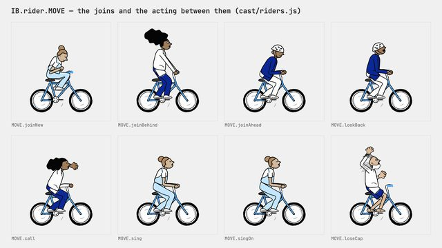
출연진 견본: 라이더의 동작 표 IB.rider.MOVE 여덟(joinNew, joinBehind, joinAhead, lookBack, call, sing, singOn, loseCap).
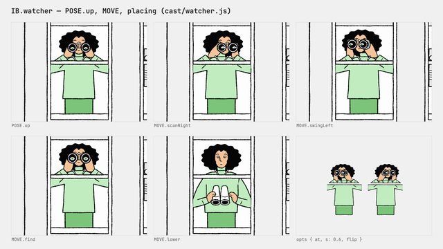
출연진 견본: 여섯 번째 스팟의 쌍안경 든 사람 IB.watcher, 포즈 하나(IB.watcher.POSE.up)와 동작 넷(IB.watcher.MOVE.scanRight, swingLeft, find, lower).